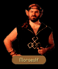

|  |
| "Report soldier! What news?" |
| CHAPTER 4 - FIRST | CHAPTER 4 - SECOND |
|
Gorath knocked on the wooden door. They were greeted by a uniformed moredhel who stared at Owyn for a moment before ushering them inside. After leading them into a back room, the guard presented them to Moraeulf. MORAEULF: What have you? Make it brief. GORATH: Sar-Sargoth has been besieged. Lord Narab and an unknown number of confidants freed dissidents trapped in the dungeons and fled north. Delekhan requests that you and the remaining members of the Six lend immediate assistance. MORAEULF: Madness! I have my troops in position, ready to march and our target is only a week's expedition from here. If we leave now, we will not be in position when the time comes for the final strike! Surely Delekhan doesn't intend to divert us into the snowplains to chase a handful of cowards?! GORATH: The intentions of your father are unknown to me. I merely bring his message. Further, he requests progress reports on your activities. MORAEULF: If he were not my father, I would slit his impertinent throat! What does he wish to know?
|
Gorath knocked on the wooden door. They were greeted by a uniformed moredhel who stared at Owyn for a moment before ushering them inside. After leading them into a back room, the guard presented them to Moraeulf. MORAEULF: Has my father sent you once more to find out if I have the competence to feed myself or is there something you forgot?
|
| THE SIX (if Cullich) |
GORATH: Your father has expressed concern that he has been inadequately informed about the activities of the Six. He demands an immediate report.MORAEULF: Father knows as well as I how the Six conduct their business! They do not report to me anything beyond complaints their lodgings are too cold and that they do not care for the food! I do not trust their motives. They speak only to their leader and he comes only when it suits him. If it were my decision to make, I would turn them all into the snow and let them freeze.
GORATH: But they are crucial to the attack at Northwarden, are they not?
MORAEULF: Northwarden is of little importance. It's the goal beyond that concerns me. What shall happen should we have Murmandamus back among our ranks?
GORATH: How would that be possible? Murmandamus is dead.
MORAEULF: I will answer my father's questions, messenger, but I am not here for your own curiosity.
| PASSWORDS (if Inclindel) |
GORATH: The guards at the Inclindel Bridge have turned back goods stolen from the Kingdom. We need the password for the day to authorize the movement of the goods across the bridge.MORAEULF: Where do you go with them?
GORATH: With us, back to the mustering at Sar-Sargoth. The supplies are desperately needed there. Many hungry soldiers to feed.
MORAEULF: My soldiers are hungrier. You have new orders. You are to stop in Harlech with the shipment before proceeding north. We shall take what is needed.
GORATH: I don't believe Delekhan will be too pleased...
MORAEULF: Delekhan be damned! If he likes, he may come here and retrieve the goods himself, but I will take them! Tell the men at the bridge you are a Serpentslayer. I shall expect the supplies immediately.
| FIRST GOODBYE | SECOND GOODBYE |
|
GORATH:
You have answered all we have been directed to discover. MORAEULF: Enthralling. Now take leave of me and send my father my good wishes. GORATH: Your will, Lord Moraeulf.
|
GORATH:
We shall take our leave of you...with your permission. MORAEULF: I would advise you not to taunt me so, whoever you are. Once this battle is at an end... GORATH: ...we shall still be your father's servants and you know how protective he is of what he owns. Farewell, Lord Moraeulf...
|
| CHAPTER 7 - FIRST | CHAPTER 7 - SECOND |
|
They were not alone. Locklear's pulse quickened as he saw the lone figure approach; but when it became apparent they were not being attacked, he relaxed a bit, squinted slightly in an attempt to see who was about to join them. MORAEULF: Crualla sholbah moredhelan nordrannas baktu? JAMES: Uh...we're...Quegian, warlord. If you could stay speaking in the Kingdom tongue, may be we could understand one another better? MORAEULF: Sebah! How progresses the transfer from the Tsurani gate? JAMES: We were ambushed, Lord Moraeulf! Several men, heavily armed were moving through the Dimwood. We were lucky to escape! MORAEULF: Kingdom soldiers? JAMES: Perhaps... I know they weren't under our standards so they probably weren't mercenary. We heard sounds farther off from where they came from. It might be a whole army. MORAEULF: Obkhar may have reached someone and raised the alarm. Damn! This will complicate the march to Sethanon. How close were they to the Six's rift-machine? JAMES: No idea. We got turned around during the attack... Our couriers were killed and we needed field reports. We hoped you could help us. MORAEULF: What do you need to know?
|
[CHAPTER 7] They were not alone. Locklear's pulse quickened as he saw the lone figure approach; but when it became apparent they were not being attacked, he relaxed a bit, squinted slightly in an attempt to see who was about to join them. MORAEULF: You again. I suppose by your reappearance that something else has happened which merits interrupting me?
|
| RIFT MACHINE (if Obkhar) |
JAMES: The magicians at the rift-machine tell me there seems to be a malfunction with the gate. They need one of the parts they had stored away.MORAEULF: But the gate still functions?
JAMES: No. Failed just before the magicians sent us and it is beyond repair with what they have. They said they need the devices they stored with you.
MORAEULF: It is hidden in a box, locked with our...special...locks. Victory is the password. You will find it in a canyon being near the southwest corner of this wood. The box is there.
| FOOD (if no Rations) |
JAMES: We've been unable to find food. Others in our company are starving as well. It will be difficult for us to maintain the loyalty of dozens of hungry mercenaries...MORAEULF: We must find it! The Kingdom soldiers found our caches here. They must have...suspected...we were approaching.
| GOODBYE |
|
JAMES:
We have our orders to attend to, with or without our squadron... MORAEULF: To them then, with all haste. If any further complications arise, report to me immediately! JAMES: Your will, warlord.
|